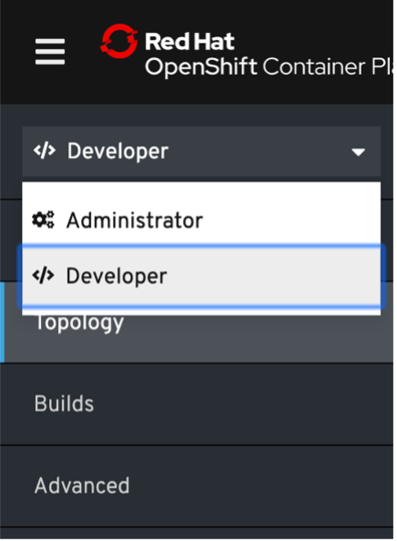
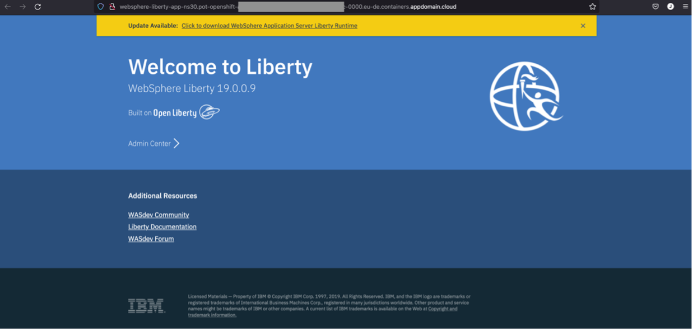
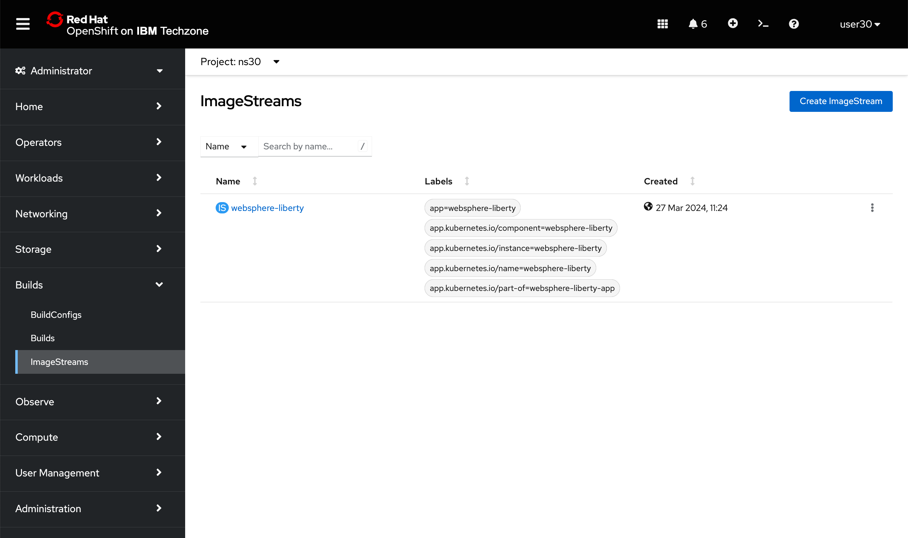
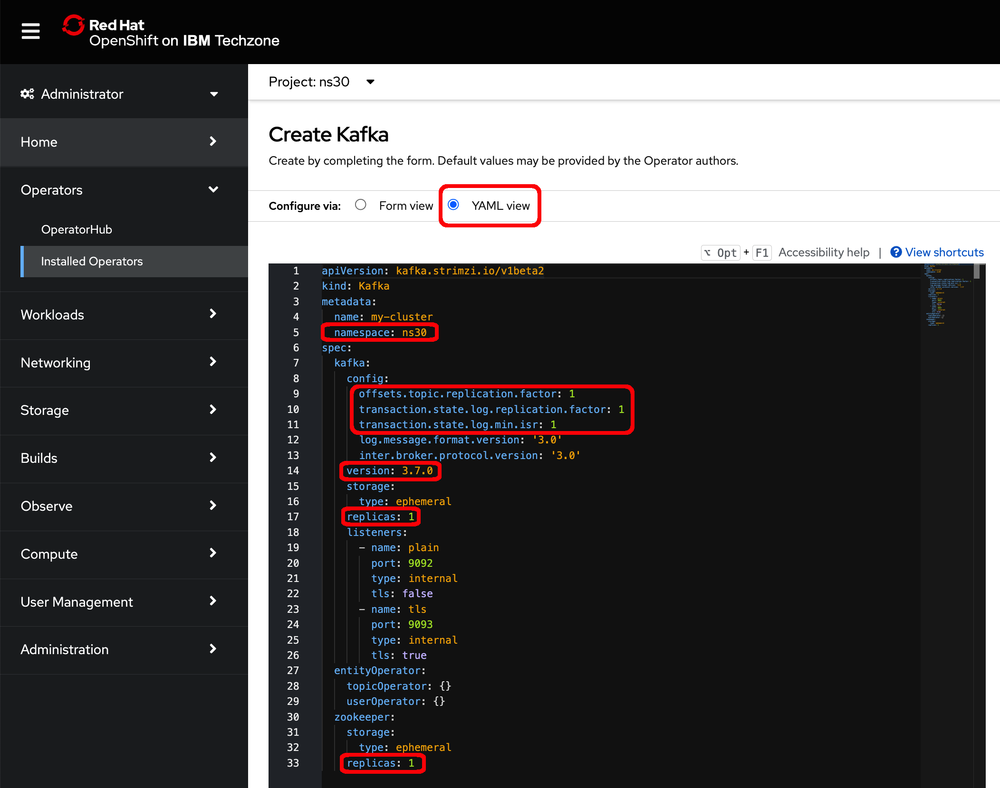
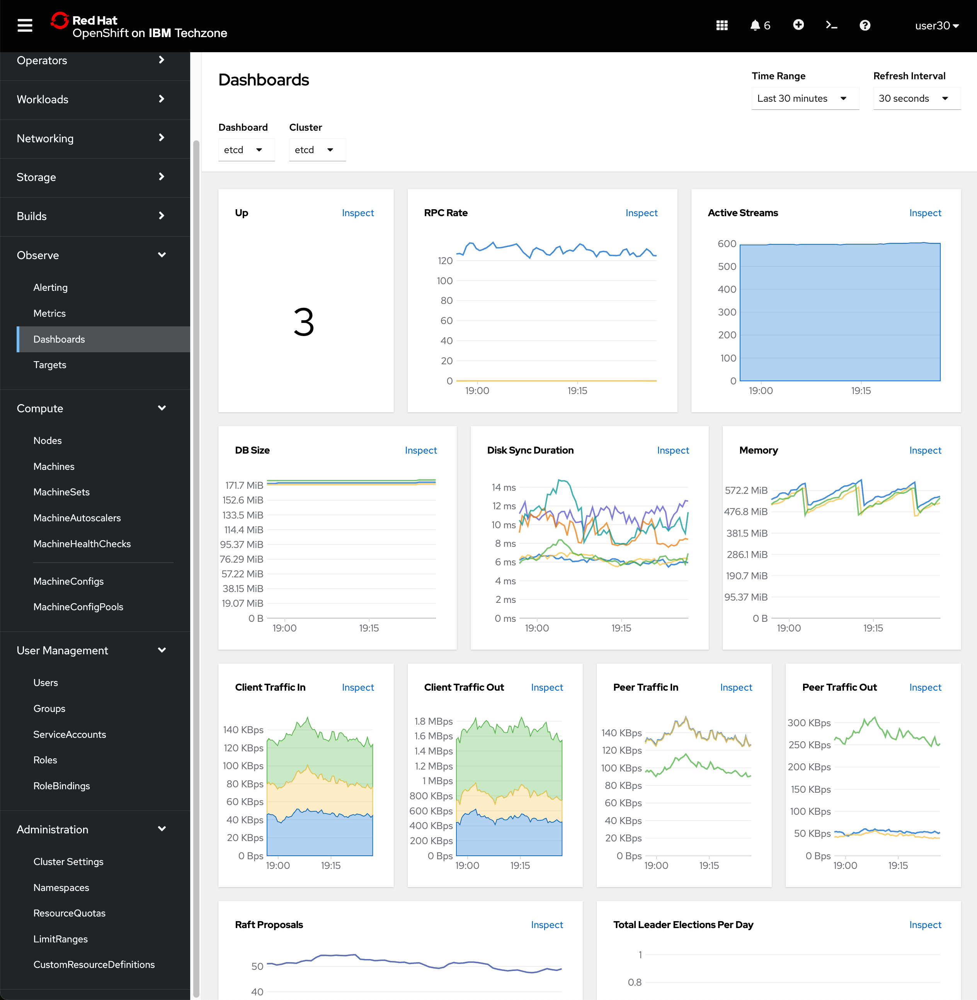
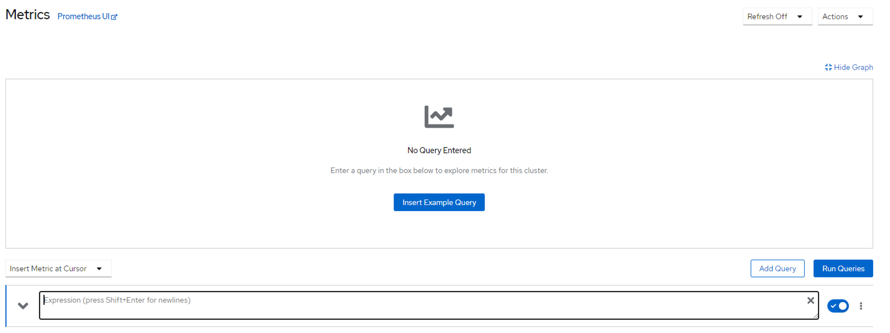
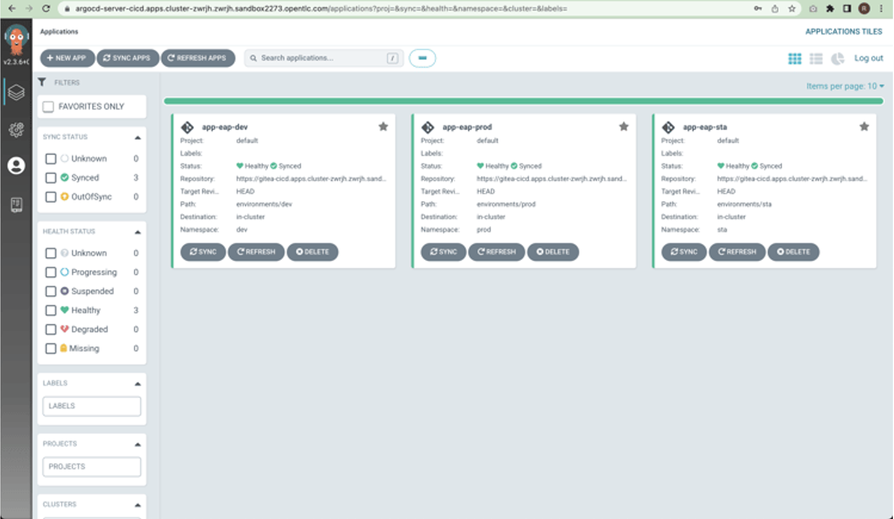
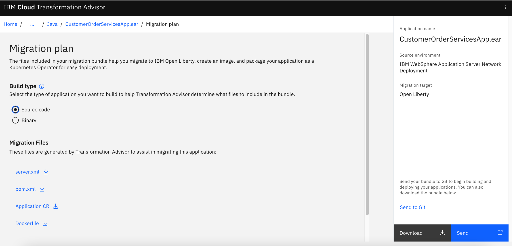

Application Modernization on Red Hat OpenShift - Technical workshop
Disclaimer
This material has been created for training and learning purposes. It is not, by any means, official documentation supported by either IBM or Red Hat.
Workshop environment
The environment for this workshop is composed of:
- OpenShift cluster
- RHEL bastion
Both are shared amongst all participants. The RHEL bastion is pre-configured with the scripts, assets and CLIs you will need to complete this workshop. All these will be placed under your user home directory.
The OpenShift cluster comes with an embedded terminal you can use to SSH into the RHEL bastion.
A project for each user has been created in the OpenShift cluster for them to work within.
You will also be provided with:
-
The OpenShift cluser web console URL
https://console-openshift-console.apps.XXXXXX.cloud.techzone.ibm.com/
-
Username and password for the OpenShift cluster and the RHEL bastion.
Lab 1 - Deploy and expose an application using Red Hat OpenShift console.
1. Login to the console
Log into the OpenShift web console using the URL and credentials provided by the instructors.

OpenShift offers two perspectives: Administrator and Developer. You can use both if you have permissions.
If you click on Home --> Projects, the page will show a list of the projects due you have reader permissions. You have not permissions to create a new one. You have just permissions to work with one of them. (Ask to the instructor which one is yours).
As you have rights to create Projects, you see the Create Project button.
On the Administrator perspective, Home --> Overview, it will show a general dashboard with the health and status of the whole cluster. Something like this:
2. Deploy a new application
First, we are going to group our artifacts on a project (namespace). Administrator has created each namespace already and gave the permissions for each user.
We are going to deploy a WebSphere Liberty official image.
Select the Developer perspective from left panel:

Click +Add
Change to the project where you have permissions and click Container Image, for example if you are user user30 select project ns30 in the Project dropdown menu:

Enter the following information:
- Image
- Image Name: websphere-liberty:19.0.0.9-webProfile8-java11
- General
- Application Name: websphere-liberty-app
- Advanced Options
- Create a route to the application: checked
- Click Create button.
If everything goes well, you should see the Topology view and the application deploying...
Press the websphere-liberty-app icon from the middle of the screen to see the status:
As you can see, a route has been automatically created for the application. It should be something like:
http://websphere-liberty-app-nsX.apps.XXXXXX.cloud.techzone.ibm.com

Now, from the same view we were before we can click on the pod link to check it's details:
Pod Details
It takes few seconds to get info on the pod Metrics graphs shown.
Click Events tab. This is the first place to look for errors in runtime or during deployment:
And Logs tab:
Terminal tab is also useful sometimes because you get a console inside the container itself:
Tip
This terminal is attached to a container within the pod you are at the moment so that you can run commands in that container. The workshop terminal which you use to ssh to the RHEL bastion is also a terminal attached to a container of a pod. A container that is pre-configured with certain tools (like the OpenShift CLI, ssh, etc) and integrated with the OpenShift Web Console. Don't confuse these.
In next section we will do the same but from command line understanding all the concepts that happened automatically under the covers when we used the OpenShift web console.
You can see the Service created using the Administration perspective:
Also, you can see the Route created:
And the ImageStream:

Lab 2 - Deploy and expose an application using Red Hat OpenShift command line
1. Login with the command line
OpenShift can be configured using different Identity providers (LDAP, HttpPassword ...). But normally, you will login using a token.
To get this token, click on the dropdown user menu in the upper right corner of the page and click Copy Login Command:
On next page, click the Display Token link and copy the Log in with this token command line:
Paste the copied command in your terminal (where oc CLI is installed).
Important
To carry out the workshop, a RHEL bastion has been created where users can find the scripts, assets and CLIs required to perform the exercises. Before starting the workshop, all users should have received clear instructions as to how to SSH into that RHEL bastion and how to use it. Otherwise, ask the instructiors.
Logged into "https://api.XXXXXX.cloud.techzone.ibm.com:6443" as "user30" using the token provided.
You have access to 79 projects, the list has been suppressed. You can list all projects with 'oc projects'
Using project "default".
If login is successful, command result gives the number of projects you have permissions to, and which one is the default. As you have reader rights, you'll see all of them, but you just have writting permission on yours.
You can set your project as the default via:
oc project nsX
Now using project "ns30" on server "https://api.XXXXX.cloud.techzone.ibm.com:6443".
We have installed the OpenShift command line for you in the RHEL bastion. However, it you wanted to also install the command line in your own desktop, click on help icon, select Command Line Tools and follow the instructions from the OpenShift console:
2. Deploy a new application
Now we can execute commands against the cluster.
First, let's make sure we clean all existing artifacts from previous lab. To remove the deployment, on Administrator go to Workloads --> Deployments. On the websphere-liberty-app right side three-dots options drop down menu, select Delete Deployment.
Select Delete when prompted for confirmation making sure you check the two boxes available so that not only the deployment is deleted but also the service and the route.
Once verified that the resources have been deleted, let's define our first OpenShift deployment. Create a file called was-deployment.yaml with the following content:
apiVersion: apps/v1
kind: Deployment
metadata:
name: websphere-liberty-app
namespace: nsX
spec:
selector:
matchLabels:
app: websphere-liberty-app
replicas: 1
template:
metadata:
labels:
app: websphere-liberty-app
spec:
containers:
- name: websphere-liberty-app
image: websphere-liberty:19.0.0.9-webProfile8-java11
ports:
- containerPort: 9080
Tip
The indentation is very important. Pay attention when executing the copy and paste. If you have problems with the copy and paste, all the files used in the labs are in the artifact folder under the user home folder.
Because the file exists in /artifacts directory, execute:
cd /home/userX/artifacts
oc create -f was-deployment.yaml
If everything went well, your pod should be running. Check it out executing:
oc get pods nsX
NAME READY STATUS RESTARTS AGE
websphere-liberty-app-6fb8f5b9fd-x4c89 1/1 Running 0 37s
Pod could be on ContainerCreating Status. Let's wait few seconds and try again. Application is running but it can't be accessed.
We need to define a service to expose it internally or externally. Let's see how in next section.
3. Expose the application
Reference
https://docs.openshift.com/container-platform/4.12/networking/understanding-networking.html
3.1 Cluster IP
Let's start exposing the application just internally via ClusterIP service type. As we did before, create a file called was-service1.yaml with this content:
apiVersion: v1
kind: Service
metadata:
name: websphere-liberty-service1
namespace: nsX
spec:
selector:
app: websphere-liberty-app
type: ClusterIP
ports:
- protocol: TCP
port: 9080
targetPort: 9080
Tip
The indentation is very important. Pay attention when executing the copy and paste. If you have problems with the copy and paste, all the files used in the labs are in the artifact folder under the user home folder.
Once you have the file created, execute:
oc create -f was-service1.yaml
sevice/websphere-liberty-service1 created
If everything went well, your service should be deployed, and the application accessed from inside the cluster (this means other pods running in it):
oc get services -n nsX
NAME TYPE CLUSTER-IP EXTERNAL-IP PORT(S) AGE
websphere-liberty-service1 ClusterIP 172.30.82.44 <none> 9080/TCP 10s
Note
If you don't find the service, double check your default project (oc projects or oc get services --all-namespaces).
Executing the following command, you can also see the mapping to the real endpoints (your application pods). It doesn't matter if your application scales up, scales down, moves to other worker... that will be managed internally by the service. You just access to the service name or its internal IP:
oc describe service websphere-liberty-service1 -n nsX
Name: websphere-liberty-service1
Namespace: ns30
Labels: <none>
Annotations: <none>
Selector: app=websphere-liberty-app
Type: ClusterIP
IP Family Policy: SingleStack
IP Families: IPv4
IP: 172.30.82.44
IPs: 172.30.82.44
Port: <unset> 9080/TCP
TargetPort: 9080/TCP
Endpoints: 10.131.0.87:9080
Session Affinity: None
Events: <none>
If Endpoints is empty, it means the application has not been found. Review the steps on the previous chapter.
We can check the IP of our pod, to see that it matches the endpoint from the service, with the following command:
oc get pods -o wide -n nsX
NAME READY STATUS RESTARTS AGE IP NODE NOMINATED NODE READINESS GATES
websphere-liberty-app-6fb8f5b9fd-x4c89 1/1 Running 0 4m12s 10.131.0.87 worker-2 <none> <none>
But as we said, this type of service is accessible only from inside the cluster itself. We have other two types of services to expose the application externally.
3.3 Ingress
Once we have a service, we can create an Ingress object. An Ingress object is used to expose an application to consumers outside the OpenShift cluster. It uses a OpenShift service (ClusterIP) to know the internal IPs used by the application.
The Ingress Controller used by default in OpenShift is an HAProxy, but there are more ingress controllers available (i.e. F5 Ingress Controller).
Create a file called was-ingress.yaml with this content:
apiVersion: networking.k8s.io/v1
kind: Ingress
metadata:
name: websphere-liberty-ingress
namespace: nsX
spec:
rules:
- host: websphere-liberty-app-nsX.apps.XXXXXX.cloud.techzone.ibm.com
http:
paths:
- path: /
pathType: Exact
backend:
service:
name: websphere-liberty-service1
port:
number: 9080
Tip
The indentation is very important. Pay attention when executing the copy and paste. If you have problems with the copy and paste, all the files used in the labs are in the artifact folder under the user home folder.
Important
The ingress subdomain XXXXXX must be the one assigned to the cluster. In this case: apps.XXXXXX.cloud.techzone.ibm.com
You can get it from the very same OpenShift web console URL you have your browser pointing to.
Once you have the file created, execute:
oc create -f was-ingress.yaml -n nsX
ingress.networking.k8s.io/websphere-liberty-ingress created
If everything went well, your service should be deployed:
oc get ingress -n nsX
NAME CLASS HOSTS ADDRESS PORTS AGE
websphere-liberty-ingress <none> websphere-liberty-app-ns30.apps.65f05030777e25001ee8fdfa.cloud.techzone.ibm.com router-default.apps.65f05030777e25001ee8fdfa.cloud.techzone.ibm.com 80 17s
With this Ingress object, OpenShift has configured the ingress controller to route traffic from internal routers to the application/deployment in the cluster.
The "rule" is that all the requests made for the hostname
http://websphere-liberty-app-nsX.apps.XXXXXX.cloud.techzone.ibm.com
must be routed directly to the pods selected by the service websphere-liberty-service1. This enables, for example, sticky sessions. There are other options to configure the rules not only by hostname. For example, it is also possible to use the path.
Now you can access the URL
http://websphere-liberty-app-nsX.apps.XXXXXX.cloud.techzone.ibm.com
in order to access your application. As we are using the cluster's ingress subdomain you can access directly.
Tip
Remember, it is exposed over http rather than https.
You can also try with curl:
curl -s http://websphere-liberty-app-nsX.apps.XXXXXX.cloud.techzone.ibm.com/ | grep WebSphere
<title>WebSphere Liberty 19.0.0.9</title>
<h2>WebSphere Liberty 19.0.0.9</h2>
4. Clean all the artifacts
To delete all artifacts, you can use the previous files that define the object:
oc delete -f was-service1.yaml
oc delete -f was-service2.yaml
oc delete -f was-ingress.yaml
oc delete -f was-deployment.yaml
Lab 3 - Storage
1. Check your current application
First, we are going to check what happens when you have not assigned external persistent storage on your application.
Create your application:
oc create -f was-deployment.yaml
Create a file internally in the pod via the pod's Terminal:
Inside the Terminal, go to logs folder and create a file
cd logs
touch hola.txt
Delete the existing pod to create a new one. OpenShift will create it automatically again.
Go to the new pod and check with the Terminal the /logs folder again. You will observe that hola.txt file doesn't exist.
This is because containers are ephemeral, and we have not used external persistence.
2. Storage Classes
Reference
As we have commented already, Storage Classes are used to provision dynamic Persistent Volumes.
During this lab we will configure external storage in Red Hat OpenShift. This storage will allow to our application to use external persistence. It can be shared storage or not, depending on the storage technology we use.
There are several options for the storage, like: NFS, OpenShift Data Foundation (old OpenShift Container Storage), Spectrum Scale, Cloud providers... For simplicity, we will use the ODF storage class coming out of the box with the cluster for this workshop.
You can check the existing storage classes available on the cluster:
You can see them also via command line:
oc get storageclasses
NAME PROVISIONER RECLAIMPOLICY VOLUMEBINDINGMODE ALLOWVOLUMEEXPANSION AGE
localblock kubernetes.io/no-provisioner Delete WaitForFirstConsumer false 14d
ocs-storagecluster-ceph-rbd openshift-storage.rbd.csi.ceph.com Delete Immediate true 14d
ocs-storagecluster-ceph-rgw openshift-storage.ceph.rook.io/bucket Delete Immediate false 14d
ocs-storagecluster-cephfs openshift-storage.cephfs.csi.ceph.com Delete Immediate true 14d
openshift-storage.noobaa.io openshift-storage.noobaa.io/obc Delete Immediate false 14d
You can install other types such as NFS but we are going to use the default one.
Delete all artifacts:
oc delete -f was-deployment.yaml
3. Create a Persistent Volume Claim
We will use again our WebSphere Liberty sample application. We will externalize logs directory from the container to maintain existing logs after pod restart.
We are going to create a dynamic Persistence Volume via the Storage Class. Let's create a Persistent Volume Claim going to:
Change all the values marked below (notice the app Selector must match with your user). Please take care and just ask for 10 Mi.
Or copy the following content on the Edit YAML, updating the red marked texts:
apiVersion: v1
kind: PersistentVolumeClaim
metadata:
name: was-volume1
namespace: nsX
spec:
accessModes:
- ReadWriteMany
resources:
requests:
storage: 10Mi
storageClassName: ocs-storagecluster-cephfs
And press Create button.
If everything goes well, it should appear with Bound status.
Info
The way we can link the PVC with an existing PV is via a selector. In the Persistent Volume Claim we can specify the PV label, for example:
selector:
matchLabels:
app: myPersistentVolume
If you do not specify a label or a Storage Class, the bind is done randomly always considering the requirements of the PVC and the characteristics of existing PVs. If no matching PV is found it will remain in Pending status.
4. Use the persistence volume claim in an application
Let's deploy again a WebSphere Liberty image but this time mapping its /logs directory to the external persistence volume we have created. Everything should be familiar except some new lines related to the persistence.
You can create a file called was-deployment-pvc.yaml file with this content (or use the one on the artifacts folder created for you):
apiVersion: apps/v1
kind: Deployment
metadata:
name: websphere-liberty-app
namespace: nsX
spec:
selector:
matchLabels:
app: websphere-liberty-app
replicas: 1
template:
metadata:
labels:
app: websphere-liberty-app
spec:
containers:
- name: websphere-liberty-app
image: websphere-liberty:19.0.0.9-webProfile8-java11
ports:
- containerPort: 9080
volumeMounts:
- mountPath: "/logs"
name: was-persistence
volumes:
- name: was-persistence
persistentVolumeClaim:
claimName: was-volume1
initContainers:
- name: permissionsfix
image: alpine:latest
command: ["/bin/sh", "-c"]
args:
- chown 1001:0 /prueba;
volumeMounts:
- name: was-persistence
mountPath: /prueba
Tip
The indentation is very important. Pay attention when executing the copy and paste. If you have problems with the copy and paste, all the files used in the labs are in the artifact folder under the user home folder.
Once you have the file created, execute:
oc create -f was-deployment-pvc.yaml
deployment.apps/websphere-liberty-app created
If everything went well, your pod should be running:
oc get pods -n nsX
NAME READY STATUS RESTARTS AGE
websphere-liberty-app-658997c5cf-6fhp2 1/1 Running 0 55s
We are going to create a file again on the logs folder. Now we are going to do it via command line.
-
Exec into the WebSphere Liberty app pod
Tip
Replace
websphere-liberty-app-658997c5cf-6fhp2with the output from the previous command andnsXwith your user number.Commandoc rsh websphere-liberty-app-658997c5cf-6fhp2 -n nsX -
Create a new file
Commandcd logs touch hola.txt ls -laOutputtotal 6 drwxr-xr-x. 2 default root 2 Mar 27 14:49 . dr-xr-xr-x. 1 root root 50 Mar 27 14:47 .. -rw-rw-rw-. 1 default root 0 Mar 27 14:49 hola.txt -rw-r-----. 1 default root 5344 Mar 27 14:47 messages.log -
Type "exit" to finish the pod shell session
Now we are going to delete the pod via command line:
Tip
Replace websphere-liberty-app-658997c5cf-6fhp2 with the output from the previous command and nsX with your user number.
oc delete pod websphere-liberty-app-658997c5cf-6fhp2 -n nsX
You can see the pod is deleted and another one is created automatically.
pod "websphere-liberty-app-658997c5cf-6fhp2" deleted
oc get pods
NAME READY STATUS RESTARTS AGE
websphere-liberty-app-658997c5cf-g4lf7 1/1 Running 0 17s
Enter in the new pod shell and check hola.txt file continues existing.
-
Exec into the WebSphere Liberty app pod
Tip
Replace
websphere-liberty-app-658997c5cf-g4lf7with the output from the previous command andnsXwith your user number.Commandoc rsh websphere-liberty-app-658997c5cf-g4lf7 -n nsX -
Check the hola.txt file exists
Commandcd logs ls -laOutputtotal 13 drwxr-xr-x. 2 default root 3 Mar 27 14:50 . dr-xr-xr-x. 1 root root 50 Mar 27 14:50 .. -rw-rw-rw-. 1 default root 0 Mar 27 14:49 hola.txt -rw-r-----. 1 default root 6793 Mar 27 14:50 messages_24.03.27_14.50.21.0.log -rw-r-----. 1 default root 5344 Mar 27 14:50 messages.log -
Type "exit" to finish the pod shell session
5. Clean all the artifacts
To delete all artifacts, you can use the previous files:
oc delete -f was-deployment-pvc.yaml
oc delete -f was-pvc1.yaml
Lab 4 - Image repository
During these labs we have been using Docker Hub as image repository, but in this lab, we are going to create our own docker image and we are going to push it to OpenShift image repository.
For this Lab we have two options, we can work with a Java EE application using a WebSphere Liberty runtime or a Javascript application using a Node.js runtime.
Note
The administrator of this Lab system should make sure that the OpenShift image registry has been exposed via a route.
1. Create an image (Node.js)
In this lab we will create an image almost from "scratch", we will reuse a base operating system image and we will configure it, install middleware, and install the application. In the next lab we will reuse an image with everything already installed and we will simply deploy the application.
For this lab we provide three files, app.js with the node.js code, package.json to automate the build and execution of the node.js with npm and hellonode.buildfile to generate the image.
In your environment these files should be present in the folder /home/userX/artifacts/nodejs.
This is the content of the hellonode.buildfile:
FROM debian:10
RUN apt-get -y update && apt-get install -y curl
RUN curl -sL https://deb.nodesource.com/setup_20.x | bash -
RUN apt-get install -y nodejs
RUN mkdir /app
ADD ./nodejs/app.js /app
ADD ./nodejs/package.json /app
RUN cd /app && npm install
ENV PORT 8080
EXPOSE 8080
WORKDIR "/app"
CMD ["npm", "start"]
With this build file what we do is to create a new image from a debian image in docker hub. This is specified by the line
FROM debian:10
Then we install node.js runtime v20 and copy our application files inside the image in the right directories.
Finally, we specify in the image that it listens to port 8080 and that starts with command /app/npm start.
Create the image
First, we need to know the OpenShift internal image registry URL:
HOST=$(oc get route default-route -n openshift-image-registry --template='{{ .spec.host }}')
echo $HOST
It should be something like
default-route-openshift-image-registry.apps.XXXXXXX.cloud.techzone.ibm.com
Then, execute from the artifacts folder in your home directory the following command to build the docker image (notice last colon in the build command).
cd /home/userX/artifacts
podman build -t hellonode:1.0 -f ./nodejs/hellonode.buildfile .
It can take some time, it depends on if the image is on the machine or not (if not, it has to be downloaded).
STEP 1/12: FROM debian:10
Resolved "debian" as an alias (/etc/containers/registries.conf.d/000-shortnames.conf)
Trying to pull docker.io/library/debian:10...
Getting image source signatures
Copying blob sha256:a9a7bf5145e4a86e137c0a7612407b53eb4b97f73f4d6f15a64c2d52c682b500
Copying config sha256:1048ff9a62c68759bfea343a5e6039b909f35107896d5d2ced130d8353464f04
Writing manifest to image destination
STEP 2/12: RUN apt-get -y update && apt-get install -y curl
...
...
STEP 11/12: WORKDIR "/app"
--> 021a922758f5
STEP 12/12: CMD ["npm", "start"]
COMMIT hellonode:1.0
--> 083a7cccf60e
Successfully tagged localhost/hellonode:1.0
083a7cccf60e0bce9cb12e1ff107c5559e7fc2f0999d49a2dbd5659444c6b878
You can check the image created:
podman images
REPOSITORY TAG IMAGE ID CREATED SIZE
localhost/hellonode 1.0 083a7cccf60e 2 minutes ago 404 MB
Alternative
We have the image you should build in the previous step in docker.io in case you can not build it yourself because you are behind a proxy or face any other issues. In this step, you pull the image and tag it, the result is the same as if you had executed the build process.
podman pull docker.io/aranchaocana/hellonode:2.0
podman tag docker.io/aranchaocana/hellonode:2.0 hellonode:1.0
Now, once you have created the image locally, you are going to tag it to the final repository. Be careful to replace nsX on the next command.
podman tag hellonode:1.0 $HOST/nsX/hellonode:1.0
Info
We will explain later the notation for tagging images as $HOST/nsX/image_name:image_tag
Check your images again:
podman images
REPOSITORY TAG IMAGE ID CREATED SIZE
localhost/hellonode 1.0 083a7cccf60e 4 minutes ago 404 MB
default-route-openshift-image-registry.apps.65f05030777e25001ee8fdfa.cloud.techzone.ibm.com/ns30/hellonode 1.0 083a7cccf60e 4 minutes ago 404 MB
2. Create an image (Java EE)
For this lab we provide two files, HelloK8s.war with the Java EE web application and hellok8s.buildfile to generate the image.
In your environment these files should be present in the folder /home/userX/artifacts/javaee.
This is the content of the hellok8s.buildfile:
FROM websphere-liberty:19.0.0.9-webProfile8-java11
COPY --chown=1001:0 ./javaee/HelloK8s.war /config/dropins/
With this file what we do is to create a new image from an existing WebSphere Liberty installation with only the modules needed by the Web Profile specifications and using Java SE 11. This is specified by the line
FROM websphere-liberty:19.0.0.9-webProfile8-java11
Then we copy our application file inside the image in the right directory.
Create the image
Execute from the artifacts folder in your home directory the following command to build the docker image (notice last colon in the build command).
cd /home/userX/artifacts/
podman build -t hellok8s:1.0 -f ./javaee/hellok8s.buildfile .
STEP 1/2: FROM websphere-liberty:19.0.0.9-webProfile8-java11
Resolving "websphere-liberty" using unqualified-search registries (/etc/containers/registries.conf.d/999-podman-machine.conf)
Trying to pull docker.io/library/websphere-liberty:19.0.0.9-webProfile8-java11...
Getting image source signatures
Copying blob sha256:849d56b8f8ce5eac04ac1618c9e81a0f4bf30d7b1a1159fd0641112eb77d6554
Copying blob sha256:de83a2304fa1f7c4a13708a0d15b9704f5945c2be5cbb2b3ed9b2ccb718d0b3d
Copying blob sha256:423ae2b273f4c17ceee9e8482fa8d071d90c7d052ae208e1fe4963fceb3d6954
Copying blob sha256:b6b53be908de2c0c78070fff0a9f04835211b3156c4e73785747af365e71a0d7
Copying blob sha256:f9a83bce3af0648efaa60b9bb28225b09136d2d35d0bed25ac764297076dec1b
Copying blob sha256:d6eb45629ecf6b86562f04def09260db9e15101e2a6974e746e19e5077c1f605
Copying blob sha256:d22178cfc3346cf1fa48ef7990423b33344cceec8ba9d1b581238b29e1eb50e7
Copying blob sha256:dc72c60911b444e1b85040e3038b67ee9b8deddc1e6791aafcca484128a71b92
Copying blob sha256:783927643a0ed0ad0ce818a6f126d12ff06e88a97e2dd3a0a5d10e7094b721e6
Copying blob sha256:0f7666177f3b860ba093cec48942b4fa93a9b7450bd31e5b7770dcbe2848e67a
Copying blob sha256:975c2ce1319ffc00b1d345d142db0589f04d3dfed194d60af5e53bc44ce94d2b
Copying blob sha256:bd6a269b8c04c40e3222d332a4a7a84bfa3faab833255012d6fca8041f122928
Copying blob sha256:ca09d98aadadafb33f488cad3c3d7bdc8c5f1ca4038c406d8d6dcf0ce492124d
Copying blob sha256:f7867820d612db1130128c6af14ae7f1c1215565ccacba671f095c0f7aa39f7a
Copying blob sha256:cb6a1680efbbd0058049151ac11c3ae131cfe8665f024cde14efbe10692e0a23
Copying config sha256:40271528d14a21bb12e44105be8cf7bf7bff50f4a44dbc6836dd7252efcb0d38
Writing manifest to image destination
STEP 2/2: COPY --chown=1001:0 ./javaee/HelloK8s.war /config/dropins/
COMMIT hellok8s:1.0
--> f6e9efdcd944
Successfully tagged localhost/hellok8s:1.0
f6e9efdcd944783ed1f5bd5272a8c71058101b9e2347e5bce5792d5f15300c32
You can check the image created:
podman images
REPOSITORY TAG IMAGE ID CREATED SIZE
localhost/hellok8s 1.0 f6e9efdcd944 33 seconds ago 396 MB
localhost/hellonode 1.0 083a7cccf60e 6 minutes ago 404 MB
default-route-openshift-image-registry.apps.65f05030777e25001ee8fdfa.cloud.techzone.ibm.com/ns30/hellonode 1.0 083a7cccf60e 6 minutes ago 404 MB
docker.io/library/websphere-liberty 19.0.0.9-webProfile8-java11 40271528d14a 4 years ago 396 MB
Alternative
We have the image you should build in the previous step in docker.io in case you can not build it yourself because you are behind a proxy or face any other issues. In this step, you pull the image and tag it, the result is the same as if you had executed the build process.
podman pull docker.io/aranchaocana/hellok8s-java:1.0
podman tag docker.io/aranchaocana/hellok8s-java:1.0 hellok8s:1.0
Now, once you have created the image locally, you are going to tag it to the final repository. Be careful to replace nsX on the next command.
podman tag hellok8s:1.0 $HOST/nsX/hellok8s:1.0
Check your images again:
podman images
REPOSITORY TAG IMAGE ID CREATED SIZE
localhost/hellok8s 1.0 f6e9efdcd944 2 minutes ago 396 MB
default-route-openshift-image-registry.apps.65f05030777e25001ee8fdfa.cloud.techzone.ibm.com/ns30/hellok8s 1.0 f6e9efdcd944 2 minutes ago 396 MB
localhost/hellonode 1.0 083a7cccf60e 8 minutes ago 404 MB
default-route-openshift-image-registry.apps.65f05030777e25001ee8fdfa.cloud.techzone.ibm.com/ns30/hellonode 1.0 083a7cccf60e 8 minutes ago 404 MB
docker.io/library/websphere-liberty 19.0.0.9-webProfile8-java11 40271528d14a 4 years ago 396 MB
3. Publish the image to OpenShift
We will publish the hellonode and hellok8s images to the OpenShift internal image registry using the podman push command. But before that, we should make sure the image tagging is correct.
Tag the image:
Podman will know where to push the image based on the image tag. Remember our tag is:
default-route-openshift-image-registry.apps.XXXXXXX.cloud.techzone.ibm.com/nsX/hellok8s:1.0
Where:
default-route-openshift-image-registry.apps.XXXXXXX.cloud.techzone.ibm.comis the docker image registry.nsXis the namespace.hellok8sis the image name.1.0is the version of the image.
Login to the repository and push the image:
Execute these podman commands:
podman login $HOST -u $(oc whoami) -p $(oc whoami -t)
podman push $HOST/nsX/hellonode:1.0 $HOST/nsX/hellonode:1.0
podman push $HOST/nsX/hellok8s:1.0 $HOST/nsX/hellok8s:1.0
Now in the OpenShift console you can see these images. Go to left menu panel and open the Builds section, then select Image Streams. Within each Image Stream, you will see all the tags (or versions) existing in the OpenShift internal image registry:
4. Create a Deployment
As we did in previous Labs in this document, we can create a deployment using this pushed image.
At this point we have two options, use the OpenShift internal image registry internal URL (image-registry.openshift-image-registry.svc:5000) or the external one we used before to push the images. The external route, however, would require a pullsecret with the credentials to authenticate against it as we did with podman login. Thus, Let's use the internal URL that is easier and faster.
This is the yaml file for the deployment was-deployment-registry1.yaml:
apiVersion: apps/v1
kind: Deployment
metadata:
name: websphere-liberty-app
namespace: nsX
spec:
selector:
matchLabels:
app: websphere-liberty-app
replicas: 1
template:
metadata:
labels:
app: websphere-liberty-app
spec:
containers:
- name: websphere-liberty-app
image: image-registry.openshift-image-registry.svc:5000/nsX/hellok8s:1.0
ports:
- containerPort: 9080
Tip
The indentation is very important. Pay attention when executing the copy and paste. If you have problems with the copy and paste, all the files used in the labs are in the artifact folder under the user home folder.
To create the deployment, execute the following command:
oc create -f was-deployment-registry1.yaml
Also, create the service and the ingress that is required in order to be able to access the application from outside the OpenShift cluster (since we are using the same application name, the service and ingress definitions from earlier can be reused):
oc create -f was-service1.yaml
oc create -f was-ingress.yaml
As we have created an application on Websphere Liberty, we have to use the context root for the application (HelloK8s) to be able to access it. Point your browser to:
http://websphere-liberty-app-nsX.apps.XXXXXXX.cloud.techzone.ibm.com/HelloK8s
You can also use curl to test your application:
curl http://websphere-liberty-app-nsX.apps.XXXXXXX.cloud.techzone.ibm.com/HelloK8s
I'm alive!!!
The other option is using the OpenShift internal image registry external URL. As already mentioned, we would first need to create a secret with the appropriate authentication credentials.
Let's also explore this case as it is very useful to understand how to use an external registry.
Let's create a secret executing this command:
oc create secret docker-registry exposed-openshift-registry \
-n nsX \
--docker-server=$HOST \
--docker-username=$(oc whoami) \
--docker-password=$(oc whoami -t) \
--docker-email=userX@openshift.pot
Tip
Remember that the user and the password to authenticate with the OpenShift internal image registry can be retrieved respectively with
oc whoamioc whoami -t
In the deployment, we use as the image registry the exposed host of the OpenShift internal image registry, and we configure the property imagePullSecrets with the secret we have just created to authenticate against the repository.
Create file was-deployment-registry2.yaml:
apiVersion: apps/v1
kind: Deployment
metadata:
name: websphere-liberty-app
namespace: nsX
spec:
selector:
matchLabels:
app: websphere-liberty-app
replicas: 1
template:
metadata:
labels:
app: websphere-liberty-app
spec:
containers:
- name: websphere-liberty-app
image: default-route-openshift-image-registry.apps.XXXXXXX.cloud.techzone.ibm.com/nsX/hellok8s:1.0
ports:
- containerPort: 9080
imagePullSecrets:
- name: exposed-openshift-registry
Tip
The indentation is very important. Pay attention when executing the copy and paste. If you have problems with the copy and paste, all the files used in the labs are in the artifact folder under the user home folder.
Once you have the file updated, you can update the application via the apply command:
oc apply -f was-deployment-registry2.yaml
deployment.apps/websphere-liberty-app configured
Tip
Disregard any warning yield as a result of using oc apply -f
Check the status of the pod:
oc get pods -n nsX
NAME READY STATUS RESTARTS AGE
websphere-liberty-app-848fc68d97-2q7w5 1/1 Running 0 53s
Now, point your browser to:
http://websphere-liberty-app-nsX.apps.XXXXXXX.cloud.techzone.ibm.com/HelloK8s
the output is the same as before, but this time we are using an image from an "external" docker image registry.
Tip
We have simulated the behavior as if it was a real external docker image registry.
You can also execute the following curl command:
curl http://websphere-liberty-app-nsX.apps.XXXXXXX.cloud.techzone.ibm.com/HelloK8s
I'm alive!!!
5. Clean all the artifacts
oc delete -f was-deployment-registry2.yaml
oc delete -f was-service1.yaml
oc delete -f was-ingress.yaml
oc delete secret exposed-openshift-registry
Lab 5 - Application Management
Let's start deploying the Java EE or the Node.js application with its services to be accessible.
Info
All the commands and screenshots will be using Java EE sample, but it works the same with Node.js
oc create -f node-deployment-registry1.yaml
oc create -f node-service1.yaml
oc create -f node-ingress.yaml
Then, list all pods executing:
oc get pods -n nsx
Verify that node-app pod has not been restarted anytime. RESTARTS value should be 0.
NAME READY STATUS RESTARTS AGE
node-app-59fdfd5d69-vqphh 1/1 Running 0 14s
1. Automatic restarts
Let's invoke /kill endpoint in the sample application. The /kill method executes System.exit(0); in Java or process.exit(); in Node.js, which makes both runtimes to quit and finish the container.
First, load the application in the browser via this URL:
http://node-app-nsX.apps.XXXXXXX.cloud.techzone.ibm.com/
Or from the command line:
curl http://node-app-nsX.apps.XXXXXXX.cloud.techzone.ibm.com/
I'm alive 8!!!
Once the app is running, call the /kill endpoint:
http://node-app-nsX.apps.XXXXXXX.cloud.techzone.ibm.com/kill
Or executing the respective curl command:
curl http://node-app-nsX.apps.XXXXXXX.cloud.techzone.ibm.com/kill
After invoking /kill, if you check the running pods in our namespace, you will see that node-app pod is still running but now RESTARTS field has value 1. If you execute the commands very fast, you will be able to see how the old pod is completed and a new one is started.
This is happening because in the deployment specification of the application we set "replicas" to 1. This means, we want always one instance running.
oc get pods -n nsx
NAME READY STATUS RESTARTS AGE
node-app-59fdfd5d69-vqphh 1/1 Running 1 (39s ago) 2m49s
We can check again this behavior but deleting the pod manually from the command line, instead of killing the container via the sample application logic:
Tip
Make sure to change the pod name node-app-59fdfd5d69-vqphh with the name of your pod from the previous steps.
oc delete pod node-app-59fdfd5d69-vqphh -n nsX
Then, check the restarts of the pod
oc get pods -n nsx
NAME READY STATUS RESTARTS AGE
node-app-59fdfd5d69-fjzmc 1/1 Running 0 4s
You can see that a new pod (the name is different) has been created instead of restarting the old one, so RESTARTS field has value 0 again. This is because we have deleted the pod. In previous sample, the same pod was restarted when its container was killed (not deleted). That is the difference, but the final behavior from end user perspective is the same, OpenShift has maintained automatically our application running so we get resiliency out of the box.
2. Query application health
There are sometimes where the container is running but the application is in trouble. We want OpenShift to ask the application its status, and if it doesn't return a HTTP 200 OK code, OpenShift will restart the application.
In our sample application we have two other endpoints:
/health: will check an instance variable and returnHTTP 200orHTTP 500based on its value./infect: will change the instance variable value to forceHTTP 500in/healthendpoint.
So, after invoking the /infect endpoint, the application will start returning HTTP 500 code on its /health endpoint.
Let's add that health check to our deployment descriptor. We can edit the YAML file and apply the change or edit it from the OpenShift console. Let's do this second option this time to learn a new way of modifying deployed elements.
Info
Of course, all the changes applied through the OpenShift console will be lost if we start from scratch with the original deployment YAML files.
Go to the web console and select from the left menu Workloads and Deployments. You should see our deployed application.
Click on it and select the YAML tab.
We will see a lot of new fields that we didn't have in our original YAML file. All those fields are added automatically by OpenShift. But our original fields are all present.
Modify the deployment descriptor to add the field livenessProbe. This element is used by OpenShift to poll the application asking for its status, it can be an HTTP request, TCP invocation or an shell command. We are going to use an HTTP check: if the response has a status code less than 200 or greater than 400, the pod will be restarted automatically.
However, for OpenShift check the livenessProbe, the readinessProbe should be checked before and return ready status.
These are the specs for livenessProbe and readinessProbe we need to place properly in our deployment definition:
readinessProbe:
httpGet:
path: /health
port: 8080
scheme: HTTP
initialDelaySeconds: 5
timeoutSeconds: 30
periodSeconds: 10
successThreshold: 1
failureThreshold: 3
livenessProbe:
httpGet:
path: /health
port: 8080
scheme: HTTP
initialDelaySeconds: 5
timeoutSeconds: 30
periodSeconds: 10
successThreshold: 1
failureThreshold: 3
Important
Make sure the indentation is set properly. Otherwise, OpenShift will yield errors.
Your deployment should look like this (disregard properties order, check the readiness and liveness probes are well indented in relation to the other properties):
Then press Save button and Reload.
If you prefer to edit it using vi, you can execute this command, but be careful with the indentation that might be different:
oc edit deployment node-app -n nsX
With this configuration, OpenShift will invoke the endpoint /heath in intervals of 10 seconds. If the application does not return HTTP 200 OK for three consecutive times, OpenShift will restart the application.
Load again the application in the browser:
http://node-app-nsX.apps.XXXXXXX.cloud.techzone.ibm.com/
or execute
curl http://node-app-nsX.apps.XXXXXXX.cloud.techzone.ibm.com/
List existing pods and take note of the number of restarts:
oc get pods -n nsX
Check the logs of the application:
Tip
Make sure to change the pod name node-app-58f9494cdf-kf7k7 with the name of your pod from the previous step.
oc logs -f node-app-58f9494cdf-kf7k7 -n nsX
> HelloKube@1.0.0 start
> node app.js
[2024-03-27 16:12:37.840] [INFO] HelloKube - Starting...
[2024-03-27 16:12:37.847] [INFO] HelloKube - HelloKube listening on port 8080
[2024-03-27 16:12:40.847] [INFO] HelloKube - lalala....
[2024-03-27 16:12:43.850] [INFO] HelloKube - lalala....
[2024-03-27 16:12:46.851] [INFO] HelloKube - lalala....
[2024-03-27 16:12:47.090] [INFO] HelloKube - operation /health invoked... returning GREEN
(node:18) [DEP0066] DeprecationWarning: OutgoingMessage.prototype._headers is deprecated
(Use `node --trace-deprecation ...` to show where the warning was created)
[2024-03-27 16:12:47.097] [INFO] HelloKube - operation /health invoked... returning GREEN
[2024-03-27 16:12:49.853] [INFO] HelloKube - lalala....
[2024-03-27 16:12:52.856] [INFO] HelloKube - lalala....
[2024-03-27 16:12:55.860] [INFO] HelloKube - lalala....
[2024-03-27 16:12:57.085] [INFO] HelloKube - operation /health invoked... returning GREEN
[2024-03-27 16:12:57.086] [INFO] HelloKube - operation /health invoked... returning GREEN
[2024-03-27 16:12:58.861] [INFO] HelloKube - lalala....
[2024-03-27 16:13:01.865] [INFO] HelloKube - lalala....
You can see how the /health endpoint is invoked periodically.
Now if we invoke the /infect endpoint from the browser:
http://node-app-nsX.apps.XXXXXXX.cloud.techzone.ibm.com/infect
or executing:
curl http://node-app-nsX.apps.XXXXXXX.cloud.techzone.ibm.com/infect
We will see how the logs will change. The endpoint /health is now returning HTTP 500 and after three consecutive invocations with this return code the pod will be restarted.
...
[2024-03-27 16:15:47.084] [INFO] HelloKube - operation /health invoked... returning GREEN
[2024-03-27 16:15:47.085] [INFO] HelloKube - operation /health invoked... returning GREEN
[2024-03-27 16:15:49.991] [INFO] HelloKube - lalala....
[2024-03-27 16:15:52.995] [INFO] HelloKube - lalala....
[2024-03-27 16:15:55.396] [INFO] HelloKube - operation /infect invoked...
[2024-03-27 16:15:55.995] [INFO] HelloKube - cough...
[2024-03-27 16:15:57.084] [INFO] HelloKube - operation /health invoked... returning RED
[2024-03-27 16:15:57.086] [INFO] HelloKube - operation /health invoked... returning RED
[2024-03-27 16:15:58.996] [INFO] HelloKube - cough...
[2024-03-27 16:16:01.998] [INFO] HelloKube - cough...
[2024-03-27 16:16:05.000] [INFO] HelloKube - cough...
[2024-03-27 16:16:07.085] [INFO] HelloKube - operation /health invoked... returning RED
[2024-03-27 16:16:07.086] [INFO] HelloKube - operation /health invoked... returning RED
[2024-03-27 16:16:08.001] [INFO] HelloKube - cough...
[2024-03-27 16:16:11.005] [INFO] HelloKube - cough...
[2024-03-27 16:16:14.009] [INFO] HelloKube - cough...
[2024-03-27 16:16:17.012] [INFO] HelloKube - cough...
[2024-03-27 16:16:17.085] [INFO] HelloKube - operation /health invoked... returning RED
[2024-03-27 16:16:17.086] [INFO] HelloKube - operation /health invoked... returning RED
[2024-03-27 16:16:17.086] [INFO] HelloKube - operation /health invoked... returning RED
npm ERR! path /app
npm ERR! command failed
npm ERR! signal SIGTERM
npm ERR! command sh -c node app.js
npm ERR! A complete log of this run can be found in: /root/.npm/_logs/2024-03-27T16_12_37_692Z-debug-0.log
Notice also that the communications (hostnames, ports, etc) don't change after restarting the pods. That was the objective of the OpenShift service objects we created in previous labs, they automatically reflect and balance the traffic to the application configured in the service selector wherever it is listening now.
3. Manual scaling
We can modify the number of replicas specified in the deployment any time via web console or command line. For example, open the web console and select under Workloads section, Deployments option.
Click on our node-app deployment and press the up arrow twice:
You can also edit the deployment yaml with the UI or the CLI and change the replicas parameter or there is a specific command to scale:
oc scale deployment/node-app --replicas=3 -n nsX
Now check available pods, you should see three:
oc get pods -n nsX | grep node
NAME READY STATUS RESTARTS AGE
node-app-58f9494cdf-kf7k7 1/1 Running 1 (2m23s ago) 6m4s
node-app-58f9494cdf-t4xsw 1/1 Running 0 18s
node-app-58f9494cdf-tk2nb 1/1 Running 0 17s
Downscale again to 1 before continuing.
4. Automatic scaling
OpenShift supports the creation of auto-scaling policies based on CPU or RAM consumption and since last versions also based on custom metrics.
Before creating a new policy based on CPU consumption for example, we need to set some resource parameters at deployment level to be able to react based on consumptions.
By default, this parameter is set, in the yaml you will see:
Info
Your spec section could look different as the order of properties might differ from deployment to deployment. Focus on what is inside the resources section.
Replace it with the following yaml to request specific CPU and RAM resources for the application. Pay attention to the indentation:
resources:
requests:
cpu: 50m
memory: 100Mi
limits:
cpu: 300m
memory: 300Mi
Save and Reload in order to see the latest release.
If you prefer to edit it using vi, you can execute this command, but be careful with the indentation that might be different:
oc edit deployment node-app -n nsX
Double check a new pod has been created. It means values has been applied.
You can see on events tab, deployment-controller do some actions.
Now, let's create node-hpa.yaml file with this content:
apiVersion: autoscaling/v2
kind: HorizontalPodAutoscaler
metadata:
name: node-hpa
namespace: nsX
spec:
scaleTargetRef:
apiVersion: apps/v1
kind: Deployment
name: node-app
minReplicas: 1
maxReplicas: 3
metrics:
- type: Resource
resource:
name: cpu
target:
averageUtilization: 40
type: Utilization
Tip
The indentation is very important. Pay attention when executing the copy and paste. If you have problems with the copy and paste, all the files used in the labs are in the artifact folder under the user home folder.
Once you have the file updated, execute:
oc create -f node-hpa.yaml
You can also do it via Web browser, Workload -> Horizontal Pod AutoScalers -> Create Horizontal Pod Autoscaler (and change the generated code with ours)
Get the values of the hpa. It takes time to get the current metrics, but you can see at least the target:
oc get hpa/node-hpa
NAME REFERENCE TARGETS MINPODS MAXPODS REPLICAS AGE
node-hpa Deployment/node-app <unknown>/40% 1 3 1 79s
Now we are going to query the application in an endless loop to generate enough load and force that the CPU consumed by the application grows beyond the specified 40%. Open a new terminal and execute this shell script. Leave it running:
for ((i=1;10<=100;)); do \
curl -H "Connection: close" "http://node-app-nsX.apps.XXXXXXX.cloud.techzone.ibm.com" --connect-timeout 1; \
done
This load will increase the CPU usage and the Horizontal Pod Autoscaler will increase the number of instances. As soon as a new replica is started the OpenShift service object will redirect traffic to it so in the terminal where you executed the curl you will see first errors and the same HTML returned by the server because the application has not been started yet.
To avoid this behavior in OpenShift it exists also the parameter readinessProbe that works as the livenessProbe but it is used by OpenShift to add or remove the endpoint from the service object so if it does not return HTTP 200 the endpoint is not added to the service and the load is not balanced, this way you avoid to direct traffic to a new instance until the app is not ready to receive it.
You can check the deployment has autoscaled.
Tip
You may need to open another terminal window and execute the endless for loop to give your application extra load to reach that 40% CPU usage set in the horizontal pod autoscaler
We can check current values from web console for example. Go from left menu panel to Workloads section and select Horizontal Pod Autoscalers. Then, click in our recently created policy and check the values.
Give it a couple of minutes and pods running should escalate to 2. We can check the story of the auto-scaler in its Events tab:
You could also use:
oc describe hpa node-hpa -n nsX
Name: node-hpa
Namespace: ns30
Labels: <none>
Annotations: <none>
CreationTimestamp: Wed, 27 Mar 2024 17:20:13 +0100
Reference: Deployment/node-app
Metrics: ( current / target )
resource cpu on pods (as a percentage of request): 12% (6m) / 40%
Min replicas: 1
Max replicas: 3
Deployment pods: 2 current / 2 desired
Conditions:
Type Status Reason Message
---- ------ ------ -------
AbleToScale True ScaleDownStabilized recent recommendations were higher than current one, applying the highest recent recommendation
ScalingActive True ValidMetricFound the HPA was able to successfully calculate a replica count from cpu resource utilization (percentage of request)
ScalingLimited False DesiredWithinRange the desired count is within the acceptable range
Events:
Type Reason Age From Message
---- ------ ---- ---- -------
Warning FailedComputeMetricsReplicas 12m (x4 over 38m) horizontal-pod-autoscaler invalid metrics (1 invalid out of 1), first error is: failed to get cpu resource metric value: failed to get cpu utilization: unable to get metrics for resource cpu: no metrics returned from resource metrics API
Warning FailedGetResourceMetric 12m (x5 over 38m) horizontal-pod-autoscaler failed to get cpu utilization: unable to get metrics for resource cpu: no metrics returned from resource metrics API
Normal SuccessfulRescale 2m14s horizontal-pod-autoscaler New size: 2; reason: cpu resource utilization (percentage of request) above target
oc get pods -n nsX
NAME READY STATUS RESTARTS AGE
node-app-7cfb58c968-7b5t6 1/1 Running 0 5m16s
node-app-7cfb58c968-9b24k 1/1 Running 0 16m
Stop the endless loop you have running on the other terminal window.
5. Clean all the artifacts
oc delete -f node-deployment-registry1.yaml
oc delete -f node-service1.yaml
oc delete -f node-ingress.yaml
oc delete -f node-hpa.yaml
Lab 6 - Network Policies
If you want to control traffic flow at the IP address or port level (OSI layer 3 or 4), then you might consider using OpenShift NetworkPolicies for a particular application in your cluster.
The entities that a Pod can communicate with are identified through a combination of the following 3 identifiers:
- Other pods that are allowed (exception: a pod cannot block access to itself)
- Namespaces that are allowed.
- IP blocks (exception: traffic to and from the node where a Pod is running is always allowed, regardless of the IP address of the Pod or the node)
1. Create two deployments and create a route
For this lab, you must use a very basic sample application repository that can be built and deployed on OpenShift. The application repository contains Dockerfiles for Nginx images from the repository (Software Collections).
https://github.com/sclorg/nginx-container
Create two deployments using the oc new-app command (will be explained later on), name the first "front" and the second "backend":
oc new-app nginx~https://github.com/sclorg/nginx-ex --name=front
oc new-app nginx~https://github.com/sclorg/nginx-ex --name=backend
Create a route to the "front" service:
oc expose service front
2. Verify access to pod
Verify access to the "front" pod with the oc rsh and curl commands.
Get route information:
oc get route
NAME HOST/PORT PATH SERVICES PORT TERMINATION WILDCARD
front front-ns30.apps.65f05030777e25001ee8fdfa.cloud.techzone.ibm.com front 8080-tcp None
Get services information:
oc get services
NAME TYPE CLUSTER-IP EXTERNAL-IP PORT(S) AGE
backend ClusterIP 172.30.168.241 <none> 8080/TCP,8443/TCP 68s
front ClusterIP 172.30.108.64 <none> 8080/TCP,8443/TCP 69s
Get pods information:
oc get pods
NAME READY STATUS RESTARTS AGE
backend-1-build 0/1 Completed 0 83s
backend-5985b9f6f9-qbgx9 1/1 Running 0 66s
front-1-build 0/1 Completed 0 84s
front-659fcd86d6-fh28x 1/1 Running 0 67s
Use the oc rsh and curl commands to confirm that the "backend" pod can access the IP address of the "front" pod.
Tip
oc rsh allows to enter inside the pod to test the connection. In the following command, replace backend-5985b9f6f9-qbgx9 with the pod name from the previous command and 172.30.108.64 with the backend service IP from the output you obtained above
oc rsh backend-5985b9f6f9-qbgx9 curl 172.30.108.64:8080 | grep nginx
<h1>Welcome to your static nginx application on OpenShift</h1>
Verify access to the hello pod using the curl command against the URL of the "front" route.
curl -s front-nsX.apps.XXXXXXX.cloud.techzone.ibm.com | grep nginx
<h1>Welcome to your static nginx application on OpenShift</h1>
Change to project ns-network and get the pods running with "test" application:
oc project ns-network
oc get pods
Now using project "ns-network" on server "https://api.65f05030777e25001ee8fdfa.cloud.techzone.ibm.com:6443".
NAME READY STATUS RESTARTS AGE
test-1-build 0/1 Completed 0 7h21m
test-f47c85c89-x8j2f 1/1 Running 0 7h21m
Verify that pods can access the "front" and "backend" pods in the ns-network namespace.
Use the oc rsh and curl commands to confirm that the "test" pod can access the IP address of the "front" and "backend" services.
Tip
Replace test-f47c85c89-x8j2f pod name with your pod name and the IPs with the IPs you collected from previous steps for the frontend and backend services.
oc rsh test-f47c85c89-x8j2f curl 172.30.168.241:8080 | grep nginx
oc rsh test-f47c85c89-x8j2f curl 172.30.108.64:8080 | grep nginx
<h1>Welcome to your static nginx application on OpenShift</h1>
3. Create the deny-all network policy
From the nsX project, create the deny-all network policy:
oc project nsX
Create a file called deny-all.yaml with this content:
kind: NetworkPolicy
apiVersion: networking.k8s.io/v1
metadata:
name: deny-all
spec:
podSelector: {}
Warning
The indentation spaces are very important. Pay attention when executing the copy and paste. If you have problems with the copy and paste, all the files used in the labs are in the artifact folder under the user home folder.
Once you have the file created, execute:
oc create -f deny-all.yaml
Verify there is no longer access to the pods in the nsX namespace to the "front" pod via the exposed route. Press Ctrl+C to exit the curl command that does not reply:
curl -s -v front-nsX.apps.XXXXXXX.cloud.techzone.ibm.com | grep nginx
* Trying 169.50.187.164:80...
* Connected to front-ns30.apps.65f05030777e25001ee8fdfa.cloud.techzone.ibm.com (169.50.187.164) port 80
> GET / HTTP/1.1
> Host: front-ns30.apps.65f05030777e25001ee8fdfa.cloud.techzone.ibm.com
> User-Agent: curl/8.4.0
> Accept: */*
>
* HTTP 1.0, assume close after body
< HTTP/1.0 503 Service Unavailable
< pragma: no-cache
< cache-control: private, max-age=0, no-cache, no-store
< content-type: text/html
<
{ [2503 bytes data]
* Closing connection
Important
If the pod lands on the same node as a router-default pod, then the curl command works when traffic goes through that router pod. This is only the case with three-node clusters. In a traditional OpenShift cluster, where the control plane or infrastructure nodes are separated from the compute nodes, the network policy would apply to all the router pods in the cluster.
Verify that the "backend" pod can no longer access the IP address of the "front" pod. Wait a few seconds, and then press Ctrl+C to exit the curl command that does not reply:
oc get pods
NAME READY STATUS RESTARTS AGE
backend-1-build 0/1 Completed 0 10m
backend-5985b9f6f9-qbgx9 1/1 Running 0 9m45s
front-1-build 0/1 Completed 0 10m
front-659fcd86d6-fh28x 1/1 Running 0 9m46s
Tip
Again, change the pod name and IP to your corresponding values
oc rsh backend-5985b9f6f9-qbgx9 curl 172.30.108.64:8080 | grep nginx
Press Ctrl+c after some time when you see the curl command does not return.
4. Create a network policy to allow traffic
Create a network policy to allow traffic to the "front" pod in the nsX namespace from the test pod in the ns-network namespace over TCP on port 8080.
Create a file called allow-specific.yaml with this content:
kind: NetworkPolicy
apiVersion: networking.k8s.io/v1
metadata:
name: allow-specific
spec:
podSelector:
matchLabels:
deployment: front
ingress:
- from:
- namespaceSelector:
matchLabels:
name: ns-network
podSelector:
matchLabels:
deployment: test
ports:
- port: 8080
protocol: TCP
Warning
The indentation spaces are very important. Pay attention when executing the copy and paste. If you have problems with the copy and paste, all the files used in the labs are in the artifact folder under the user home folder.
Once you have the file created, execute:
oc create -f allow-specific.yaml -n nsX
networkpolicy.networking.k8s.io/allow-specific created
View the network policies in the nsX namespace:
oc get networkpolicies -n nsX
NAME POD-SELECTOR AGE
allow-specific deployment=front 20s
deny-all <none> 4m59s
The allow-specific network policy uses labels to match the name of a namespace. By default, namespaces and projects do not get any labels automatically.
Confirm the label was applied on the ns-network project:
oc project ns-network
oc describe namespace ns-network
Now using project "ns-network" on server "https://api.65f05030777e25001ee8fdfa.cloud.techzone.ibm.com:6443".
Name: ns-network
Labels: kubernetes.io/metadata.name=ns-network
name=ns-network
pod-security.kubernetes.io/audit=restricted
pod-security.kubernetes.io/audit-version=v1.24
pod-security.kubernetes.io/warn=restricted
pod-security.kubernetes.io/warn-version=v1.24
Annotations: openshift.io/description:
openshift.io/display-name:
openshift.io/requester: kube:admin
openshift.io/sa.scc.mcs: s0:c28,c17
openshift.io/sa.scc.supplemental-groups: 1000790000/10000
openshift.io/sa.scc.uid-range: 1000790000/10000
Status: Active
No resource quota.
No LimitRange resource.
Verify that the test pod can access the IP address of the front pod or service, but cannot access the IP address of the backend pod or service.
oc get pods -n nsX -o wide
NAME READY STATUS RESTARTS AGE IP NODE NOMINATED NODE READINESS GATES
backend-1-build 0/1 Completed 0 14m 10.131.0.159 worker-2 <none> <none>
backend-5985b9f6f9-qbgx9 1/1 Running 0 14m 10.131.0.160 worker-2 <none> <none>
front-1-build 0/1 Completed 0 14m 10.131.0.158 worker-2 <none> <none>
front-659fcd86d6-fh28x 1/1 Running 0 14m 10.128.2.103 worker-4 <none> <none>
oc get pods
NAME READY STATUS RESTARTS AGE
test-1-build 0/1 Completed 0 7h31m
test-f47c85c89-x8j2f 1/1 Running 0 7h30m
Verify access to the front pod in the ns-network namespace:
Tip
Again, change the pod name and IP to your corresponding values
oc rsh test-f47c85c89-x8j2f curl 10.128.2.103:8080 | grep nginx
Verify there is no access to the backend pod. Wait a few seconds, and then press Ctrl+C to exit the curl command that does not reply:
Tip
Again, change the pod name and IP to your corresponding values
oc rsh test-f47c85c89-x8j2f curl 10.131.0.160:8080 | grep nginx
oc rsh test-f47c85c89-x8j2f curl 10.128.2.103:8080 | grep nginx
<h1>Welcome to your static nginx application on OpenShift</h1>
oc rsh test-f47c85c89-x8j2f curl 10.131.0.160:8080 | grep nginx
command terminated with exit code 130
Create a network policy to allow traffic to the front pod from the exposed route. Use the resource file available at artifacts/allow-from-openshift-ingress.yaml:
kind: NetworkPolicy
apiVersion: networking.k8s.io/v1
metadata:
name: allow-from-openshift-ingress
spec:
podSelector: {}
ingress:
- from:
- namespaceSelector:
matchLabels:
network.openshift.io/policy-group: ingress
Change to your project nsX and create the policy:
oc project nsX
oc create -f allow-from-openshift-ingress.yaml -n nsX
networkpolicy.networking.k8s.io/allow-from-openshift-ingress created
Verify access to the front pod via the exposed route:
curl front-nsX.apps.XXXXXXX.cloud.techzone.ibm.com | grep nginx
<h1>Welcome to your static nginx application on OpenShift</h1>
From a web browser type http://front-nsX.apps.XXXXXXX.cloud.techzone.ibm.com:
Tip
Bear in mind it is HTTP protocol
5. Clean all the artifacts
oc project nsX
oc delete all -l app=front
oc delete all -l app=backend
oc delete route front
Lab 7 - Operators
Operators are software extensions to OpenShift that make use of custom resources to manage applications and their components.
The Operator pattern aims to capture the key aim of a human operator who is managing a service or set of services. Human operators who look after specific applications and services have deep knowledge of how the system ought to behave, how to deploy it, and how to react if there are problems.
People who run workloads on OpenShift often like to use automation to take care of repeatable tasks. The Operator pattern captures how you can write code to automate a task beyond what OpenShift itself provides.
Demystifying the operators, all the automation must be implemented by the operator provider, so there is not out of the box upgrade, backup, restore or other features just because something is an operator, those features must be coded in the operator by the operator provider. The automation available out of the box is the native automation of OpenShift for things like health check, scalability, load balancing and so on. An operator is a container developed by a software provider running in OpenShift looking to the state of "proprietary/custom objects (CRDs)" and taking actions depending on the values of that object.
Based on the features offered by the operators they are catalogued in these groups:
OpenShift supports and install out of the box the Operator LifeCycle Manager (OLM), OLM provides a set of features to help in the installation and management of Operators.
https://github.com/operator-framework/operator-lifecycle-manager
"OLM extends OpenShift to provide a declarative way to install, manage, and upgrade Operators and their dependencies in a cluster".
1. Deploy an operator using the Operators Catalogues
By default, there are four operator catalogues:
- Red Hat Operators: Red Hat products packaged and shipped by Red Hat. Supported by Red Hat.
- Certified Operators: Products from leading independent software vendors (ISVs). Red Hat partners with ISVs to package and ship. Supported by the ISV.
- Community Operators: Optionally visible software maintained by relevant representatives in the operator-framework/community-operators GitHub repository. No official support. Access to https://github.com/operator-framework/community-operators/tree/master/community-operators to view all available operators.
- Custom Operators: Operators you add to your own quay.io app repository. If you have not added any Custom Operators, the Custom category does not appear in the web console on your OperatorHub.
The OpenShift Operator Hub UI console is a feature offered by OpenShift that provides a user interface to deploy operators. The deployment of operators can be done by cluster admin roles using UI or CLI.
For this Lab, we have given the rights to all users in order to install the operators on each namespace.
This is how the we can deploy a Kafka operator:
Details of this operator
Click on Continue on the message warning.
Here we are configuring three things:
- The namespace or group of namespaces where the operator will listen for operator instances or CRDs. In our case nsX.
- The Channel to listen to updates for the operator. By default is the "Stable" Channel.
- The approval strategy, if the update of the operator is done automatically or need manual approval through the console or API.
This action creates two objects in OpenShift, these two objects are managed by the OLM, an Operator Group and a Subscription. The operator group is used mainly to handle security configuration in the namespaces selected for the operator and it stores also what namespaces the operator is watching for CRDs and the subscription is the way to specify what version of the operator to install and how to update it. The link between the Operator Group and the Subscription is that both are in the same namespace.
Execute this command to see the created operator:
oc get operatorgroup -n nsX
NAME AGE
ns30-9qxg5 28s
oc get operatorgroup ns30-9qxg5 -o yaml -n nsX
Tip
Change ns30-9qxg5 for your operator group name retrieved on the previous command
You should see something like this:
apiVersion: operators.coreos.com/v1
kind: OperatorGroup
metadata:
name: nsX-9qxg5
namespace: ns30
...
spec:
targetNamespaces:
- ns30
Then execute:
oc get subscriptions.operators.coreos.com strimzi-kafka-operator -o yaml -n nsX
apiVersion: operators.coreos.com/v1alpha1
kind: Subscription
metadata:
name: strimzi-kafka-operator
namespace: ns30
...
spec:
channel: stable
installPlanApproval: Automatic
name: strimzi-kafka-operator
source: community-operators
sourceNamespace: openshift-marketplace
startingCSV: strimzi-cluster-operator.v0.40.0
...
With these two objects, OLM is executing all the steps documented in this URL: https://strimzi.io/docs/quickstart/latest/#proc-install-product-str
2. Deploy a service instance using the operator
Finally, you as user can use this operator that is listening for CRDs in your namespace. Go to Installed Operators in the OpenShift web console:
And create a new Kafka cluster using the CRD enabled by the Strimzi Operator (If you can't see, wait a couple of minutes due it takes time and refresh the webpage):
Copy the next YAML (operator.yaml) in the console (you will first need to switch to yaml view at the top), this is the Kafka CRD monitored by our operator or change the default values as we have marked (use your namespace).
We have changed the replicas to 1 to reduce the number of pods and simplify the security.
apiVersion: kafka.strimzi.io/v1beta2
kind: Kafka
metadata:
name: my-cluster
namespace: nsX
spec:
kafka:
config:
offsets.topic.replication.factor: 1
transaction.state.log.replication.factor: 1
transaction.state.log.min.isr: 1
log.message.format.version: '3.0'
inter.broker.protocol.version: '3.0'
version: 3.7.0
storage:
type: ephemeral
replicas: 1
listeners:
- name: plain
port: 9092
type: internal
tls: false
- name: tls
port: 9093
type: internal
tls: true
entityOperator:
topicOperator: {}
userOperator: {}
zookeeper:
storage:
type: ephemeral
replicas: 1

Or create it with:
oc create -f operator.yaml
There are some parameters that Strimzi operator doesnt inform and they cant be displayed in the UI like the Status and Version (https://github.com/strimzi/strimzi-kafka-operator/issues/2671), but you can see them with CLI instead.
Execute this command to check the status:
oc wait kafka/my-cluster --for=condition=Ready --timeout=300s -n nsX
When it is ready, it will answer with:
kafka.kafka.strimzi.io/my-cluster condition met
It takes some time; you can also take a look at the pods:
oc get pods -n nsX
NAME READY STATUS RESTARTS AGE
my-cluster-entity-operator-8678969c-x8v7n 2/2 Running 0 42s
my-cluster-kafka-0 1/1 Running 0 66s
my-cluster-zookeeper-0 1/1 Running 0 98s
strimzi-cluster-operator-v0.40.0-76cc96b44b-7kvj2 1/1 Running 0 17m
oc describe kafka my-cluster -n nsX
Status:
Cluster Id: wSDGZ1ZyQtGhugzE_XIszw
Conditions:
Last Transition Time: 2021-09-30T18:19:09.795903Z
Message: A Kafka cluster with a single replica and ephemeral storage will lose topic messages after any restart or rolling update.
Reason: KafkaStorage
Status: True
Type: Warning
Last Transition Time: 2021-09-30T18:19:09.796033Z
Message: A ZooKeeper cluster with a single replica and ephemeral storage will be in a defective state after any restart or rolling update. It is recommended that a minimum of three replicas are used.
Reason: ZooKeeperStorage
Status: True
Type: Warning
Last Transition Time: 2021-09-30T18:20:10.718Z
Status: True
Type: Ready
With these steps you have already deployed a Kafka cluster, it has only one node because we configured it with "replicas: 1" but we could have generated a cluster of several nodes, and all the logic needed to configure the cluster is executed automatically by the operator. The operator is who creates and executes all the things needed to start and configure the Kafka cluster.
Now you can test the deployed Kafka instance. This command executes a pod using a prebuilt image with the necessary logic to interact with Kafka cluster. We are going to send several messages to kafka:
oc run kafka-producer -ti \
--image=quay.io/strimzi/kafka:latest-kafka-3.7.0 \
--rm=true \
--restart=Never \
-- bin/kafka-console-producer.sh --broker-list my-cluster-kafka-bootstrap.nsX:9092 --topic my-topic
Tip
You can ignore this message like:
"WARN [Producer clientId=console-producer] Error while fetching metadata with correlation id 3 : {my-topic=LEADER_NOT_AVAILABLE} (org.apache.kafka.clients.NetworkClient)"
You will get an interactive console where you will be able to input few events to get published to kafka:
If you don't see a command prompt, try pressing enter.
>test1
>test2
>test3
^C
pod "kafka-producer" deleted
pod nsX/kafka-producer terminated (Error)
Then, in order to read events from kafka and check taht it works, execute:
oc run kafka-consumer -ti \
--image=quay.io/strimzi/kafka:latest-kafka-3.7.0 \
--rm=true \
--restart=Never \
-- bin/kafka-console-consumer.sh --bootstrap-server my-cluster-kafka-bootstrap.nsX:9092 --topic my-topic --from-beginning
Wait some seconds and it will receive the messages, Ctrl + C to quit.
If you don't see a command prompt, try pressing enter.
test1
test2
test3
^C
As easy as you created the Kafka cluster, you can edit it with oc edit kafka my-cluster -n nsX. The operator will take the changes and reconfigure automatically the cluster. You could also work with any of the other objects managed by the operator.
3. Clean all the artifacts
Remove the instance created:
And uninstall the operator:
Lab 8 - Source2Image (S2I)
Source-to-Image (S2I) is a tool for building reproducible, Docker-formatted container images. It produces ready-to-run images by injecting application source (from a Git repository) into a container image and assembling a new image. The new image incorporates the base image (the builder) and built source and is ready to use with the buildah run command. S2I supports incremental builds, which re-use previously downloaded dependencies, previously built artifacts, etc.
1. Create the image from the Git repository
From the Developer perspective, select +Add and it show different options to deploy an application (we have seen some of them on previous labs). Select in this case From Git:
Use following Git Repo URL that stores the node.js code
https://github.com/svennam92/node-s2i-openshift
Tip
You have to Click outside the text field in order to check the Git URL is valid. You can see the "Validated" message and green ACK.
You can observe the recommended Builder Image(s) detected. It has detected the git repo provided stores Node.js code.
Double check the name of the app and select the creation of a route automatically.
Click Create in order to start the process of installation.
You can see there is a new application on Topology.
It takes a while. You can see the application moves from one state to another.
and the steps that are executed if you click on the middle of application.
When the application be ready deployed, it will appear on green:
A route has been generated for you. Click on it in order to access the new application. It will open a new tab.
https://node-s2i-openshift-nsX.apps.XXXXXX.cloud.techzone.ibm.com/login.html
Enter a dummy user and password:
You can see build was done:
And the image was added such as ImageStream. Change to the Administrator perspective:
2. Clean all the artifacts
Remove the previous Image Streams:
Delete the deployment:
Lab 9 - Logging
By default, Docker and OpenShift can access to the logs that a container prints to its STDOUT and STDERR. There are also options to access to internal or custom containers logs.
1. Command line
List running pods and tail logs from one of them:
oc create -f was-deployment-registry1.yaml
oc create -f was-service1.yaml
oc create -f was-ingress.yaml
List the pods to check the application is running
oc get pods -n nsX
Now poke the application in order to produce some logging (run the command below several times)
curl http://websphere-liberty-app-nsX.apps.XXXXXXX.cloud.techzone.ibm.com/HelloK8s/health
Retrieve the logs for your application:
Tip
Remember to use your pod name from the previous commands.
oc logs -f websphere-liberty-app-66cdc65d7-fwrmh -n nsX
La, la, la...
Executing /health. Returning GREEN.
La, la, la...
Executing /health. Returning GREEN.
La, la, la...
Executing /health. Returning GREEN.
La, la, la...
La, la, la...
La, la, la...
La, la, la...
Executing /health. Returning GREEN.
La, la, la...
Executing /health. Returning GREEN.
La, la, la...
Executing /health. Returning GREEN.
La, la, la...
La, la, la...
2. OpenShift Console
Go in left menu panel to Workloads section and select Pods. Then click on the pod you are interested in and click on the Logs tab:
3. Kibana
OpenShift includes a logging stack based on EFK: ElasticSearch, Fluentd and Kibana. It's not installed by default as you can choose your own logging system.
Info
Labs Administrators have installed the logging stack for you for this Lab.
In the OpenShift Container Platform console, click the Application Launcher and select Logging. A new browser tab will open requesting login (SSO is in the roadmap). Once you login, you will get Kibana homepage.
Info
You may be asked to log into your OpenShift account again
A new browser tab will open requesting Authorize Access. Once you click on Allow selected Permissions, you will get to the Kibana homepage.
Create an index pattern:
Select your project (if you try to see others that are not assigned to you, you can't see it):
You can add the message field on the canvas:
If you dont see the websphere-liberty-app logs, check the timeframe selected and click on Set to Now, in order to get the latest messages:
You can filter for container name (in case you have a lot of containers on your namespace):
You could delete the filter, selecting it and press the trash button:
Try to see another fake application (such as "kkk") and you will see there is nothing shown.
Lab 10 - Monitoring
OpenShift, out of the box, uses Prometheus and Grafana to monitor the state of your OpenShift cluster and the containers running on it.
Reference
Basically, with Grafana you visualize the metrics collected in Prometheus.
In OpenShift, for users to have access to the monitoring of their namespaces, access needs to be set up
As reference, this is the clusterrole configuration:
oc get clusterrole cluster-monitoring-view -o yaml
apiVersion: rbac.authorization.k8s.io/v1
kind: ClusterRole
metadata:
name: cluster-monitoring-view
rules:
- apiGroups:
- ""
resources:
- namespaces
verbs:
- get
Go to Monitoring:
In this section you have access to:
- Alerting: out of the box alerts configured against Prometheus metrics.
- Metrics: Prometheus UI to query metrics.
- Dashboards: Access to Grafana.
1. Dashboards

There are some generic dashboards (you cannot modify them). You can filter using the top combo boxes:

2. Alerts
The alerts are based on Prometheus metrics, the engine in charge of polling the alerts are the same that Prometheus.
In the OpenShift console click on Alerting.
The UI is provided by OpenShift. You can see the alerts configured and the state:
The defined alerts are in the configmap prometheus-k8s-rulefiles-0 in the namespace openshift-monitoring.
In the YAML tab, it is possible to configure how the Prometheus alert engine behaves. This is useful for things like exporting the alerts to other systems compatible with Prometheus alerts.
This configuration can only be changed by administrator users:
3. Metrics
In the OpenShift console click on Metrics:
This is a UI to display Prometheus metrics values. For a sample query click on Insert Example Query:

It will display the values for the sample query:
Information about available metrics:
https://github.com/kubernetes/kube-state-metrics/tree/master/docs#exposed-metrics
Lab 11 - CI/CD with Pipelines Tekton and ArgoCD
Let's review what is going to happen when running the CI/CD pipelines configured in the cluster.
Continuous Integration (CI)
On each push to the devops-ocp-app git repository on the Gitea server, the following steps are performed in the Pipeline:
- The webhook configured in gitea triggers the start of the pipeline;
- The code is cloned from the Gitea server and the build is performed;
- Unit tests can be run and in parallel the code is analyzed by SonarQube for anti-patterns, and a dependency report is generated;
- The application is packaged as a WAR and released to the Sonatype Nexus artifact repository;
- A container image is created in the DEV or STA environment, depending on the branch, pushed to the OpenShift internal registry and tagged with app-eap:latest;
- Kubernetes manifests are updated in the Git config repository with the image digest that was created in the pipeline;
- A pull-request is created in the config repository to merge the image summary update into the PROD environment, this step is only performed for the STA environment.
Continuous Delivery (CD)
ArgoCD continuously monitors settings stored in the Git repository and uses Kustomize to override environment-specific settings when deploying the application to DEV, STA, and PROD environments.
Deploy an Application using CI Pipelines with Tekton
The objective is to create a pipeline responsible for deploying the application in the development and staging environments. For production, there will be a manual approval and it will be made available through a pull request in the GitOps configuration repository.
Development pipeline
It contains the main steps of a software continuous integration process.
A single Pipeline serves both development and staging environments. As we are using gitflow, the control of which environment will be executed into is in charge of the branch that starts the process -> ex. branch develop for development and release for staging. For development, the Pull Request promotion task is not performed.
The next command clones the app repository from gitea server and creates a new branch called develop, then push to origin develop, so the webhook configured starts the pipeline for develop environment.
To put all of the above in motion follow the next steps:
Execute the commands below to clone the app repository, create a branch, make a change in a file and push the changes to the branch
-
Clone the repository
Commandgit clone https://$(oc get route -n cicd gitea --template='{{.spec.host}}')/gitea/devops-ocp-app.git -
Enter in the directory where is the application code
Commandcd devops-ocp-app -
Set develop branch as current
Commandgit checkout -b develop -
Get any new changes in the branch
Commandgit pull origin developTip
If you get an error after this command. Don't panic could it be the branch does not have anything to pull. Remember this repository is shared with others running the labs
-
Make a dummy change in a file
Commandsed -i 's/under the License/under the License dummy /g' pom.xml -
Add contents changed to local git
Commandgit add . -
Configure your mail and name
Commandgit config --global user.email "you@example.com" git config --global user.name "Your name" -
Commit the changes to git
Commandgit commit -m "Dummy comment" -
The next command will ask you for a user and password, where user and password are
gitea/devopsrespectivelyCommandgit push -u origin develop
Check that a pipeline run is ongoing in the PipelineRuns tab:
Review all the tasks that are executed:
Review ArgoCD is in sync with the environment.
To get the ArgoCD Web Console URL execute this command:
oc get route -n cicd argocd-server --template='{{.spec.host}}'
To login into ArgoCD, click on Log in via Openshift button on the ArgoCD welcome page
You can execute refresh or/and synchronize to keep ArgoCD in sync with the environment (the projects are enabled to be auto sync by default)

Review in gitea the repository that uses ArgoCD (devops-ocp-app-config) to understand the logic and how ArgoCD is configured from a git repository.
To get the gitea URL execute this command
oc get route -n cicd gitea --template='{{.spec.host}}'
Review the code scans in Sonarqube
To get the Sonarqube URL perform this command
oc get route -n cicd sonarqube --template='{{.spec.host}}'
Point your browser to the Sonarqube URL and use admin/admin123 as username and password respectively to log in.
Review the application is deployed in namespace dev
Check the application route and click on it to access the application
Promote an Application using CD with GitOps (gitea config repo) and ArgoCD
Execute the commands below to clone the app repository, create a branch (branch name is release for STA environment), make a change in a file and push the changes to the branch.
-
Clone the repository
Commandgit clone https://$(oc get route -n cicd gitea --template='{{.spec.host}}')/gitea/devops-ocp-app.git -
Enter in the directory where is the application code
Commandcd devops-ocp-app -
Set develop branch as current
Commandgit checkout -b release -
Get any new changes in the branch
Commandgit pull origin releaseTip
If you get an error after this command. Don't panic could it be the branch does not have anything to pull. Remember this repository is shared with others running the labs
-
Make a dummy change in a file
Commandsed -i 's/under the License/under the License dummy /g' pom.xml -
Add contents changed to local git
Commandgit add . -
Commit the changes to git
Commandgit commit -m "Dummy comment" -
The next command will ask you for a user and password, where user and password are
gitea/devopsrespectivelyCommandgit push -u origin release
Perform the same steps as in the previous chapter. Check the application is deployed in sta environment and test you can access it from openshift sta namespace.
The pipelines in sta perform an additional task promote-prod-pr to promote the change to production.
The task promote-prod-pr creates a pull request to the devops-ocp-app-config repository (the GitOps repository). The pull request contains the image digest of the last image available for PROD.
Please note that no image will be deployed in PROD by ArgoCD until the pull request is merged in the repository.
Review the pull request in gitea
Navigate to the contents of the commit associated with the pull request. Review the change to understand how ArgoCD will read the new image digest from the file modified by the sta pipeline (environments/prod/kustomization.yaml).
Merge the pull request changes to the main branch to make them available to ArgoCD

Check in ArgoCD and openshift namespace prod that a new image has been rolled out in prod for the application.
IMPORTANT
No new images will be deployed in production until someone accepts and merges the pull request as a precaution of not deploying in prod images not validated/approved.
Lab 12 - Application modernization with Transformation Advisor
The steps to complete the lab are described in a video here. Instead, you can follow the steps below.
Open Transformation Advisor URL on your web browser. To get the url:
oc get route -n ta-project ta-ui-route --template='{{.spec.host}}'
Click on Create new and give a name to the workspace: workspaceX
Tip
Replace X with your ID
Important
The following is just informational you do not have to do it in your lab environment as it has been already done for you.
Click on Download (do not perform this step in your lab just read)
Download the data collector for your desktop architecture (do not perform this step in your lab just read)
Install the data collector (do not perform this step in your lab just read)
tar xvfz transformationadvisor-Linux_workspace01.tgz
cd transformationadvisor*
./bin/transformationadvisor --help
Run the data collector against your Websphere platform where you have the applications you want to migrate to containers (do not perform this step in your lab just read)
./bin/transformationadvisor -w <WEBSPHERE_HOME_DIR> -p <PROFILE_NAME> [--scan-node --ignore-missing-binary --ignore-missing-shared-library --applications --applications-file] ([] denotes optional arguments)
As a result, you will have a zip file with the contents of the analysis. As we have not performed these steps in the lab please download an example from here AppSrv01.zip
Upload the data collection downloaded into Transformation Advisor
You can set different targets of migration. Leave open liberty as the target migration.

Review the CustomerOrderServicesApp.ear analysis.
Open the detail of the analysis
Generate the Technology report.

Generate the Inventory report.
Generate the Migration Analysis Report.
Finally, click on View Migration plan.

Download and review of the contents downloaded. The files will help on the migration of the application to containers.
Lab 13 - Scale your application with GitOps and ArgoCD
Using all you have learnt, demonstrate your skills with this advanced and minimally detailed laboratory.
Change the replicas of the application deployed in dev from 3 to 2.
- Access gitea
- Make a change to the kustomization.yaml that manages the number of replicas (you can edit the file directly using the gitea web interface)
- Commit the change
- Check in ArgoCD that the new replica count is read and applied in the namespace prod.
- Look at openshift namespace prod to check the number of replicas deployed.
Congratulations!
You have successfully completed the Application Modernization on Red Hat OpenShift Workshop. Well done!